The Birthday Advantage
The other site asked where the best athletes come from. This one asks when they were born, and what people have started doing about it.
Here is a thing that should not be true, and is.
Take the best youth hockey players in America, line them up by birthday, and the calendar is lopsided. Way more of them were born in January and February than in November and December. Not a little more. A lot more. These are kids. Nobody was better at hockey because of the month a doctor happened to write on a form.
Except they were. In almost every youth league the age cutoff falls near the start of the year, so a kid born in January is nearly a full year older than a kid born in December in the same age group. At seven years old, that year is enormous. The bigger kid scores more, makes the better team, gets the better coaching, gets told he is good, and starts believing it. The younger kid gets the opposite. By the time anyone is old enough for the gap to stop mattering, the sorting has already happened. We built a system that rewards the accident of a due date and then called the result talent.
That accident has a name. Researchers call it the relative age effect, and we already caught it hiding in our four big American leagues on the other site. This piece is about what happens next, because the story got a lot more interesting once people figured out that if being old for your grade is an advantage, you can just go get one.
Three parts. First, the accident nobody chooses. Then the strategy people invented to beat it. Then the part that should make you a little uncomfortable, which is what the whole thing does to the rest of a life, long after the last whistle.
The accident
You did not pick your birthday. It picked a lot of things for you anyway.
Start with what we measured. Line up every player in the NFL, MLB, NHL, and NBA by the quarter of the year they were born, and compare it to how births actually land on the calendar. Three of the four leagues barely move. Hockey is a staircase.
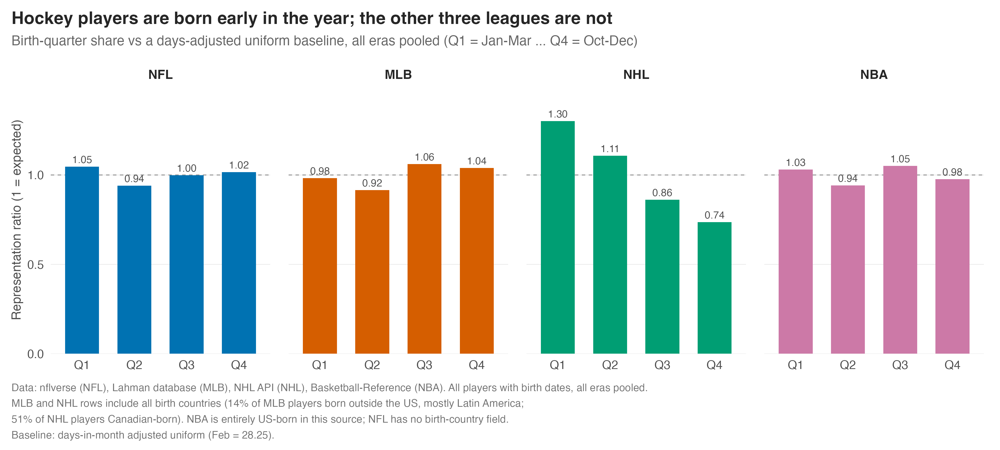
Players born in the first quarter of the year make the NHL at 1.30 times the rate you would expect from the calendar. Players born in the last quarter come in at 0.74. Football, baseball, and basketball sit flat between about 0.98 and 1.05, no meaningful tilt at all. Hockey is doing something the others are not, and it is doing it to children.
Zoom into hockey month by month and the staircase gets even cleaner.
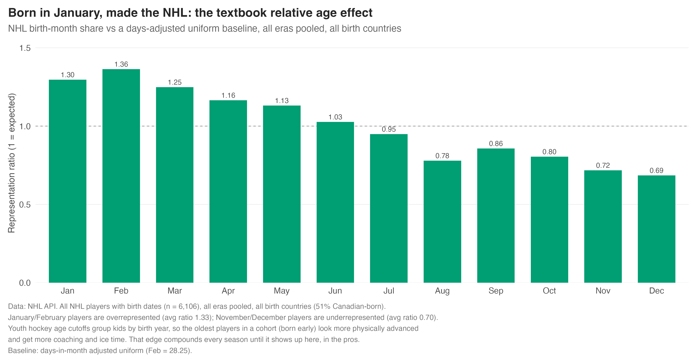
January and February births show up at about 1.33 times expected. November and December land near 0.70. Same country, same sport, same league, and the only thing that changed is which end of the age-cutoff year a kid was born on. That is the whole effect in one picture, and it holds in every era we checked going back decades. American hockey has been handing out advantages by birthday for a very long time.
Football, on the other hand, does not care what month you were born. That turns out to be the useful part.
The reason football stays flat is that it caps eligibility at three years out of high school, so almost everyone arrives inside the same tight window. Our NFL rookies pile up at 22, 23, and 24, with only a sliver at 20 or 21.
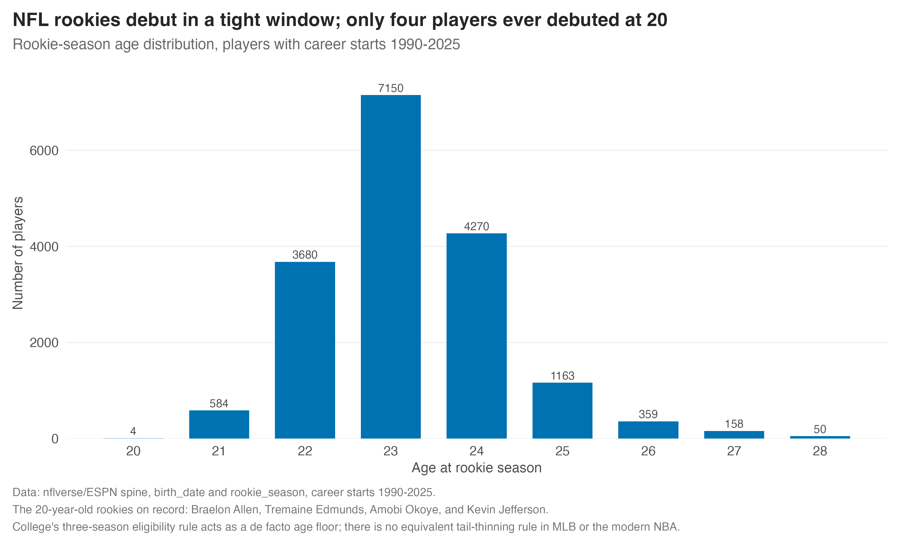
Only four players in 35 years reached the NFL at 20: Braelon Allen, Tremaine Edmunds, Amobi Okoye, and Kevin Jefferson. It happens. It is just rare. The reason to care is that football is a flat line, which makes it the perfect control for the rest of this story. When we go looking for age doing something strange, football is the ruler we measure against.
Hockey is not alone. The research says the relative age effect runs strongest in soccer and swimming, two sports built on hard age-group cutoffs that funnel kids for years, and our leagues do not include either one. So we went and got the birthdates. Pulling every US soccer player and swimmer with a recorded birth date out of Wikidata, more than 5,600 footballers and 750 swimmers, the same January tilt shows up in both.
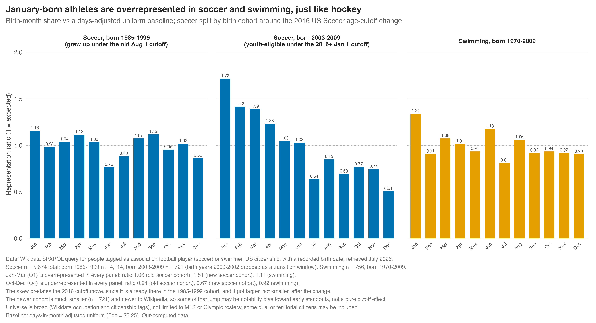
Swimmers peak in January at 1.34 times expected. Soccer does something even more pointed: the newest cohort, the kids young enough to have grown up under the current calendar-year cutoff, are born in January at 1.72 times the expected rate and in December at barely half.
Now, we wanted this to be a clean experiment. US Soccer moved its youth cutoff from an August basis to a January calendar-year basis around 2016, so in theory the birth-month peak should have picked up and slid across the calendar with it. It did not. The January skew was already there in players who grew up under the old August cutoff, and it got stronger, not different, in the newer group. Two honest reasons that could be true. The newer cohort is small and fresh to Wikipedia, so some of that spike may be the earliest bloomers being the only ones famous enough to have a page yet. And the calendar-year sorting kids feel is not only the soccer federation's cutoff. It is the school year, the travel-league brackets, and every other age fence stacked on top. The clean flip we were hoping for is not in this data. The effect itself very much is.
Soccer and swimming are also the only sports here with real women's data, which lets us ask a question worth asking: is this a boys thing? It is not. Split the birthdays by sex and the whole shape barely moves. Early-year births run about 1.15 times expected for women and men alike, and both slide down to the same place by the end of the year. The calendar sorts girls exactly as hard.
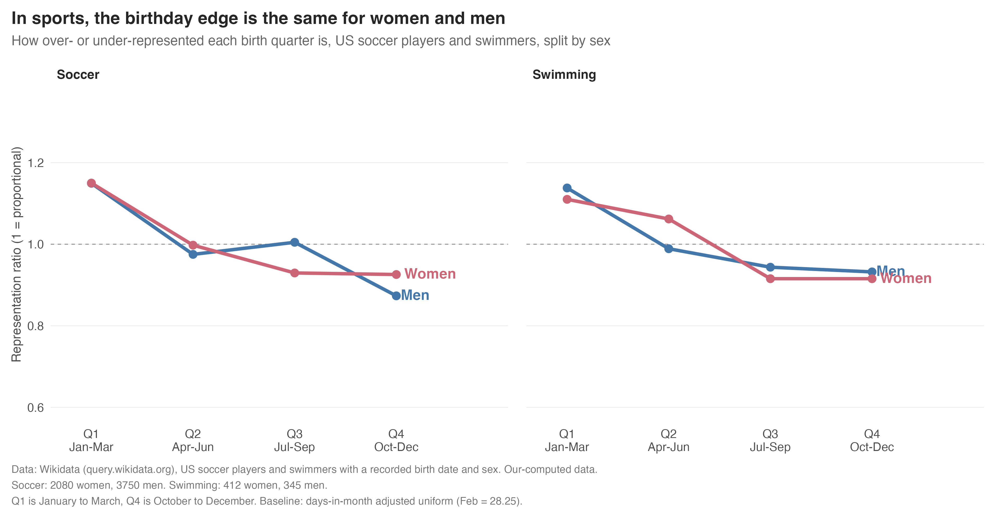
The loophole
If being old for your grade is an edge, and everybody knows it now, the obvious move is to go manufacture one.
Now it stops being an accident. Parents read the same studies we did, and so do travel coaches, and the response, especially in youth basketball and football, has been to hold kids back a year on purpose. An eighth grader repeats a grade, shows up to high school a year older and a year bigger than the kids he is now ranked against, and the birthday advantage that used to be luck becomes a decision. It is legal, it is spreading, and it has a clean upside if the goal is a scholarship.
How common is it? The honest answer is that nobody has measured it well. The best prevalence estimate we could find puts academic redshirting above 20 percent of kids overall and near 40 percent at private schools, but that is a single regional estimate with no year-over-year trend behind it. The tidy version everyone wants, the share of top-100 recruits who are old for their grade and whether it is climbing, does not exist in any public dataset. Recruiting sites publish rank, position, and height, but not birthdates. So this is the number we most want and cannot yet get, and we are saying so rather than drawing a line through data that is not there.
There is even a wrinkle in the word itself. In recruiting, "reclassify" usually means a phenom jumping a grade forward to get to college sooner, which makes him younger, the opposite of the hold-back move. Cooper Flagg, born in December 2006, reclassified up. The manufactured-age story is real, but you have to keep the two directions straight, and the clean data to size it up is still locked behind paywalls and one-player-at-a-time lookups.
Share of top recruits who are old for their grade, by class year. Blocked because recruiting rankings do not publish birthdates in bulk. Minimum viable version: one or two recent classes cross-referenced by hand against public birthdates, reported as a labeled subsample, not a full census.
The players who already made it, meanwhile, are aging in place, and there we do have the data.
Track the age at which players turn pro over time and the leagues split apart in a way that lines up exactly with their rules.
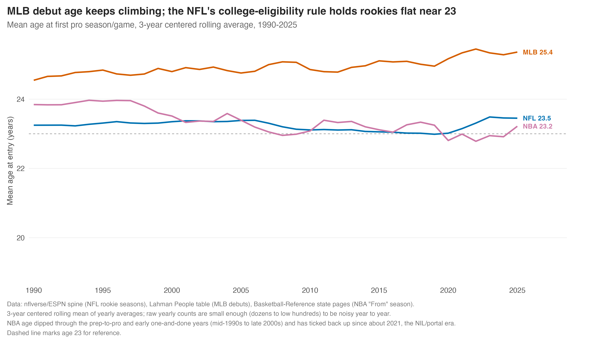
Baseball, which has no eligibility cap, has drifted older for 35 years, from about 24.4 to 25.4. Football, capped at three years out of high school, holds flat near 23 the entire time. Basketball is the interesting one. Its entry age fell through the prep-to-pro and one-and-done years, bottoming out around 22.3, and has ticked back up over the last few seasons. The likely reason is the same money that is reshaping everything else in college sports. When name-image-likeness deals and the transfer portal make staying in school pay, the fringe pro prospect who used to declare early now runs it back for another year of development and another year of paychecks. The players do not get younger anymore. They age in place, on purpose, because the incentives finally reward it.
And this is why football being flat matters. It is not that athletes in general are getting older. It is that the sports without an age cap are inflating and the one with a cap is not, which tells you the aging is a response to incentives, not something in the water.
It does not stop at the buzzer
If a birthday can bend a sports career, the fair question is why it would stop there.
Take the idea out of the gym. The sorting that starts on a youth field starts in a kindergarten classroom too, and with a bigger cutoff to hide behind. Inside a single grade the age gap can run almost a full year, and the older kids are, on average, the bigger, more coordinated, more verbal, more confident ones in the room. Teachers, being human, tend to read that as smarter. The research has been finding for years that relatively older kids get better grades, score higher on tests, get flagged for gifted programs more, and are more likely to land at selective colleges. Same effect, different field.
We cannot pull a spreadsheet of every kid's grades by birthday, and we should not pretend to. But economists have, and they have been finding the same shape for twenty years. The chart below is theirs, not ours, and it is worth sitting with.
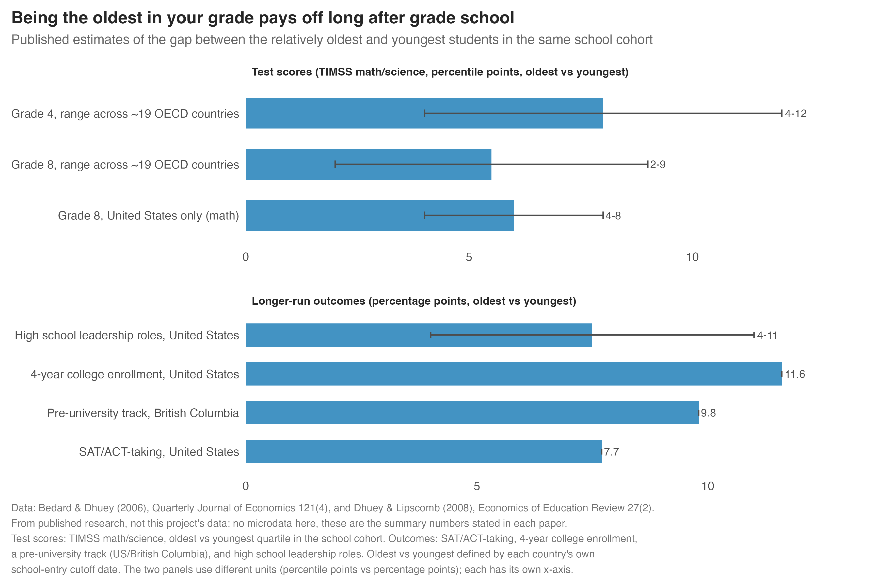
The oldest kids in a grade outscore the youngest by 4 to 12 percentile points on fourth-grade math and science, across nineteen countries. That alone would be a fine footnote. It does not stay a footnote. The relatively youngest kids end up about 7.7 points less likely to take the SAT or ACT and 11.6 points less likely to enroll in a four-year college. A gap that started with who could sit still in first grade is still visible at the college gate. Same effect, different field, higher stakes.
Here the boys-versus-girls question gets more interesting, because the answer depends on how far out you look. On the test itself, it barely matters. The oldest kids in the grade are overrepresented among the top scorers whether they are boys or girls, by about seven or eight points either way. A big Norwegian study of more than 170,000 kids lays it out plainly.
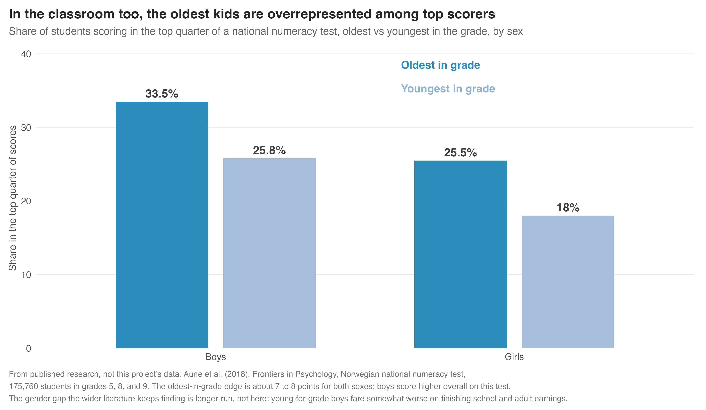
The oldest-in-grade edge is about the same size for boys and girls. Where the sexes actually split is later, in the long run. A larger body of work, including a 2021 review of 21 studies, keeps finding that the youngest-in-grade fare somewhat worse when they are boys: less likely to finish school on time, and in one study that followed people to age 30, more likely to earn less as adults. Girls feel the early tilt just as much in the classroom, it just seems to fade faster for them afterward. So the old intuition that boys mature a step slower does real work here, only not where you would first look for it. It is not the test scores. It is what happens in the twenty years after.
Which raises the question we most wanted to answer. Does it ever stop? So we took the same birth-month method we pointed at hockey players and pointed it at the people running public companies.
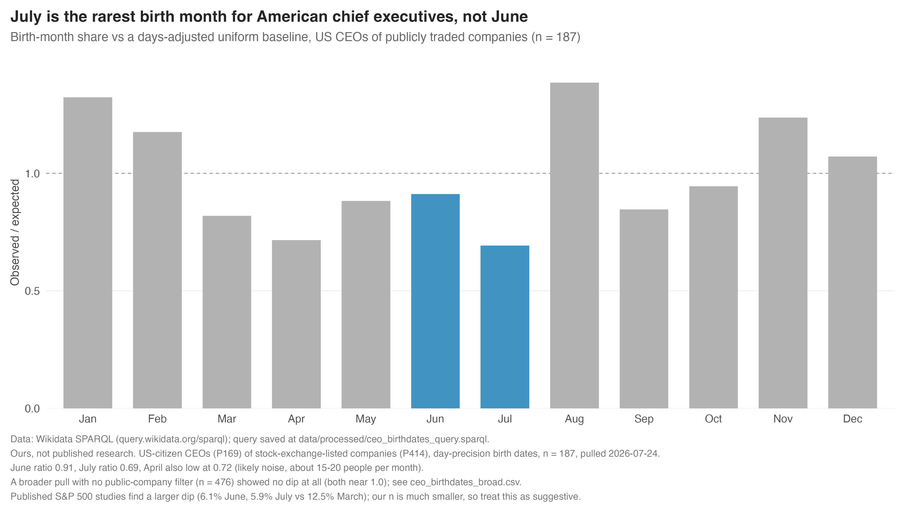
In our sample, July is the single rarest month to be a chief executive, at about 0.69 of what the calendar would predict, with June also below the line. July and June are exactly the birthdays that, under a September school cutoff, make a kid the youngest in the room. It is the relative age effect showing up in the corner office, forty years after the youth sport cutoff that may have started it.
Be careful with this one, though. Our sample is only 187 CEOs, small enough that a single quiet month can be noise, and a broader pull with looser criteria washed the dip out. It is also 173 men and 14 women, so what this really shows is that male chief executives are less likely to be summer-born, which we should say out loud rather than dress up as everyone. The reason to trust the direction anyway is that the careful studies, run on the full S&P 500, find the sharper version of exactly this: something like 6 percent of CEOs born in June and July each, against 12.5 percent in March. Our little replication points the same way the big ones do. Treat it as a nod, not a proof.
Which is why one fix is to hand out the advantage on purpose
All of this is having a real cultural moment, and the person at the center of it is Richard Reeves, whose book Of Boys and Men made the case that the male slide is real and measurable. He put numbers on the intuition that boys run a step behind. Girls are about 14 points more likely to be ready for school at age five, the widest gap of its kind, and the part of the brain that handles planning and self-control matures in girls roughly a year ahead of boys. The gap is widest in the mid-teens, right when grades start deciding what comes next.
His fix is blunt. Start boys in school a year later than girls, by default. Redshirt all of them. If being the oldest kid in the grade is an advantage, and the research keeps saying it is, then hand it to the kids who are a step behind instead of leaving it to the luck of a due date. It is the relative age effect turned from an accident into a policy. And it is already happening at the top of the income ladder. Among summer-born boys with a college-educated parent, about one in five is already held back a year. The families who can afford to buy their kid an extra year of size and maturity are buying it. Everyone else takes the birthday they were given.
The through line
Put the three acts next to each other and they make one argument. A birthday you did not choose gives some kids an early edge, the edge is real enough that families have started manufacturing it on purpose, and the same head start may keep compounding in classrooms and careers far from any field. The kid who was a little older in first grade was a little better at soccer, got a little more praise, tried a little harder, got a little further, and the gap never fully closed. Researchers call that the Matthew effect, after the line about how to those who have, more will be given: an early edge keeps opening the next door, so it grows instead of shrinking. It started with the month on a form, and for a lot of people it never went away.
The brainstorm list
Everything below is Michael's running list of ideas for the full "Birth" video, pulled from his outline and our texts, grouped the way he framed it: Birthday, Birth Place, Birth Family, Birth Order. Each card says what he asked for, where it actually stands, and the next concrete move. We knock them out one at a time and promote the ones with legs up into the acts above. Nothing here is finished; it is the backlog.
Framing, the thing to solve first
Michael's real question: the rich-get-richer story is intuitive, so where is the misconception or the little-known truth? Everything else serves this.
Michael: a lot of this is intuitive, the system feeds itself. Where is the "the only reason I'm not in the NFL is I wasn't rich" gut-punch, and where is the twist people do not expect?
Found: the intuitive spine is the money feedback loop. The twist, now confirmed in our own data, is the Underdog reversal below: the late-born players who beat a stacked age cutoff go on to outlast the early-born. It flips "older kids win" into "the system is quietly cutting its best young talent." That is the line to build the piece around.
Builds on: Underdog reversal (confirmed), Manufactured age (Act Two).
1 Birthday, the relative age effect
This companion piece is mostly here already. These are the fixes and additions Michael asked for on top of it.
Michael: bar charts are easier to read than the calendar heatmap. Give me a clean month-by-month bar for each sport, like the NHL one I sent.
Found: four leagues, one panel each, bars for the share of players born in each month. Instead of a plain trend line we drew the real US birth curve on top (the dashed line), so you can see who is over the line. Hockey towers over it in January to March and drops under it in October to December. The other three sit right on it.
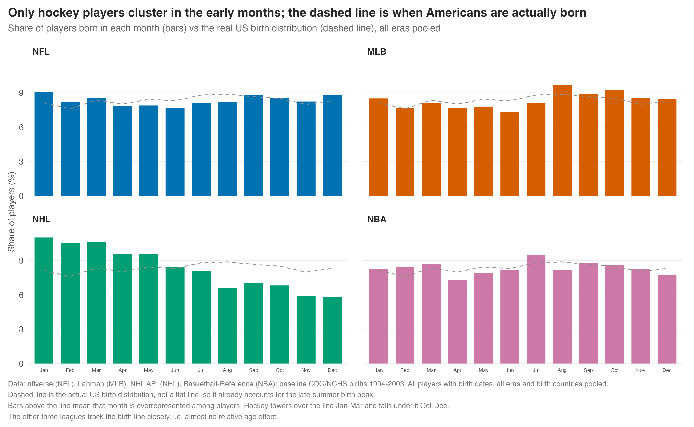
Feeds: Act One. Built by R/27.
Michael: the original NHL study plotted the percent of players in each quarter, Q1 through Q4. Match that exact look, for every sport.
Found: percent of players per quarter, one line per league, the same shape as the 1982 figure he sent. Hockey slides 32, 28, 22, 19 percent from Q1 to Q4. The other three stay flat near 25. The dashed line is the real birth share for comparison.
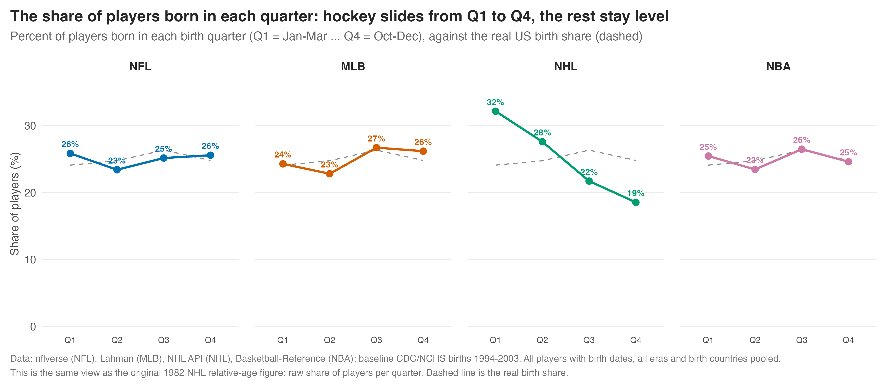
Now US soccer too (his follow-up): he asked for the same quarter view for US soccer, so here it is, with swimming alongside. Soccer slides from 29 percent in Q1 to 22 in Q4, swimming from 28 to 23. Both tilt toward early-year births like hockey, milder but clearly there, the mark of a hard youth age-group cutoff.
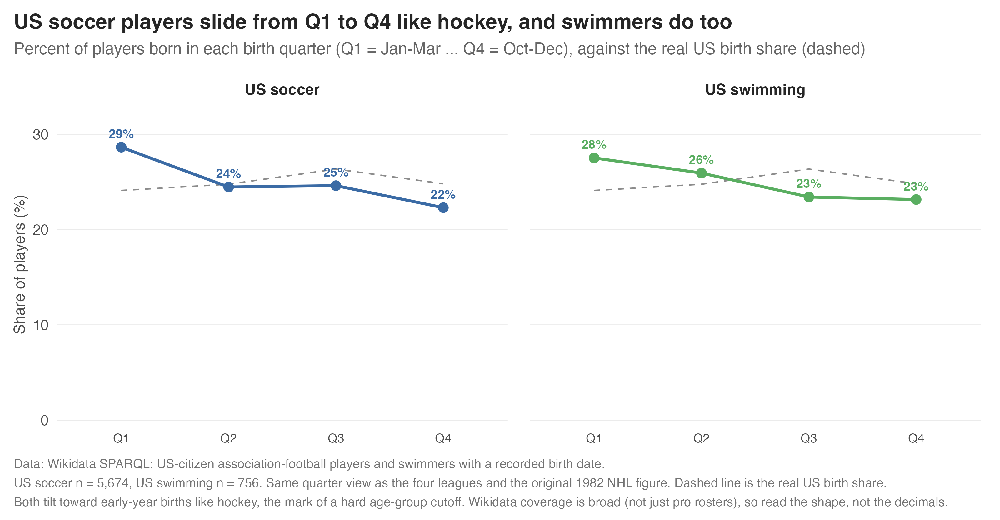
And before vs after the 2016 cutoff (his follow-up): US Soccer moved its youth age cutoff from August 1 to a January 1 calendar year around 2016. Split by cohort, the change shows. Players who grew up under the old August cutoff are nearly flat across the quarters, but the newer January-cutoff cohort tilts hard to Q1 at 37 percent and away from Q4 at 17. The effect sharpened when the cutoff moved to January. The new cohort is small and recent, so read the direction, not the decimals.
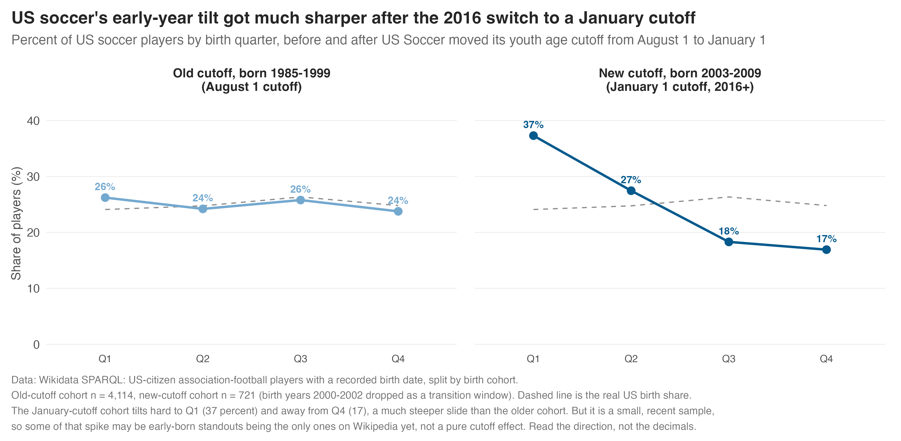
Pairs with: the month bars above. Built by R/27, R/52, and R/54.
Michael: did you weight by real births at all? Late summer months have the most babies.
Found: he was right. The baseline is now the real US birth distribution (CDC counts, 1994 to 2003), which peaks in August and bottoms out in February, not a flat line. Switching to it sharpens hockey a little (Q1 goes from 1.30 to 1.33 times expected) and deepens the CEO summer dip (July goes from 0.69 to 0.67). It cuts in our favor: summer-born people are rarer among these players than even a flat baseline would suggest. The dashed line on both charts above is this real curve.
Touches: all of Act One and the CEO chart. Built by R/27.
Michael: outline literally lists "Underdog (opposite)" under Birthday.
Found: it is real, and it is the hook. We took every NHL player who logged a game (n = 5,639) and split them by birth quarter. Q1 sends far more players to the league (32 percent vs 19 percent for Q4), but the Q4 players who make it post a higher median career: 170 games and 42 points, against 135 games and 30 points for Q1. Fewer late-born players get through, and the ones who do are better. The system takes the oldest kids and quietly loses good young talent, and the pros who slipped through prove those kids existed.
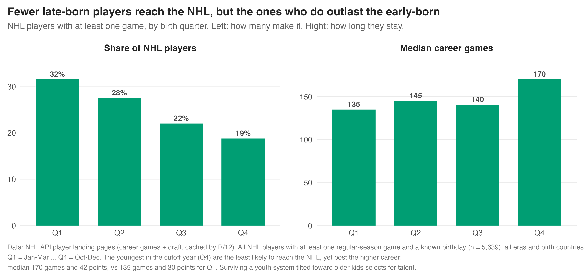
Still to try: soccer, if we can find an outcome metric in the public data, and whether the same holds for NHL points among skaters only.
Answers: the Framing card. Related: Matthew principle. Built by R/29.
Nick: a young player who goes high in the NFL draft is a strong signal. An elite prospect who is also young for his class was not leaning on maturity, so the talent is more likely real. Ja'Marr Chase, and a lot of the best receivers, came in young.
Found: the numbers back it hard. Skill-position picks from 2000 to 2016, split by age on draft day: the 21-and-under group averages 32 career value and makes a Pro Bowl 32 percent of the time. By age 24 that falls to 10 and 4 percent. It holds even inside the first round, so it is not just that younger players get picked higher. This is the NFL, draft-day version of the Underdog reversal, and fantasy drafters can use it: at the same draft capital, bet on the younger one.
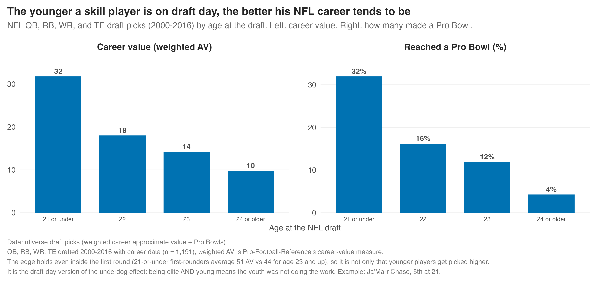
Sibling of: the Underdog reversal above. Fantasy-relevant. Built by R/30.
Nick: model the interaction of age and draft pick, per position, and predict fantasy points, career value, and second-contract money. Which effect is strongest?
Found: holding draft pick and draft year fixed, being young for your class helps most reliably on career value. It is positive for all four positions and clears significance for WR and TE. The single biggest effect is a WR second contract, nearly a full standard deviation. Quarterback is the exception across all three outcomes, since young QBs sit and develop. The age-by-pick interaction is not significant, so youth helps at every draft slot, not only early picks.
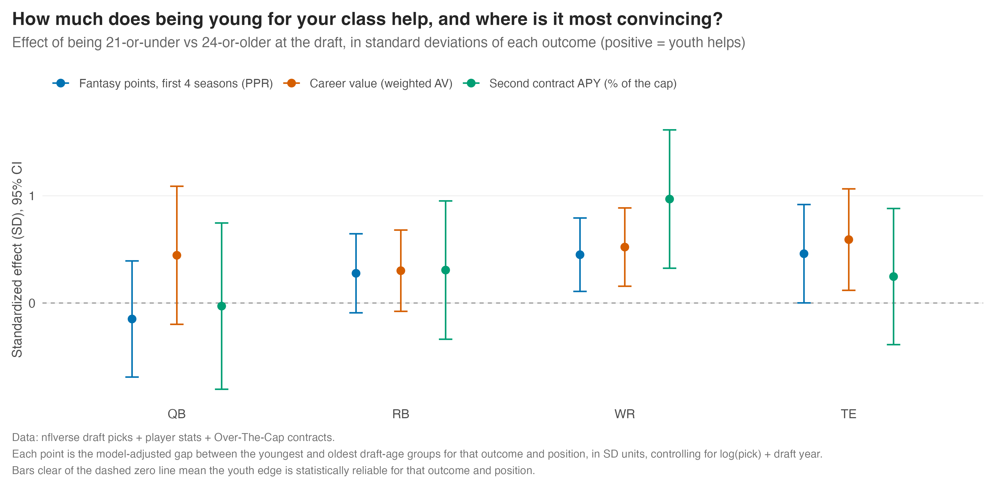
Also built as separate charts: fantasy points, career AV, and second contract, each faceted by position (R/32). Upgrades the card above with error bars and controls.
Nick: does that exist for the NHL too, do age and draft capital predict it?
Found: yes. Holding draft pick fixed, the later-born (youngest in their draft class) still outproduce the earliest-born. Q1 sits lowest in both career games and points, with its confidence bars well clear of Q3 and Q4. The effect peaks at Q3 and dips a little at Q4, but the late-born clearly beat the early-born at the same draft slot. One hockey-specific twist: unlike the NFL, players drafted a year or two older, at 19 or 20, log more games at the same pick, because an overage draftee is a safer, more pro-ready bet.
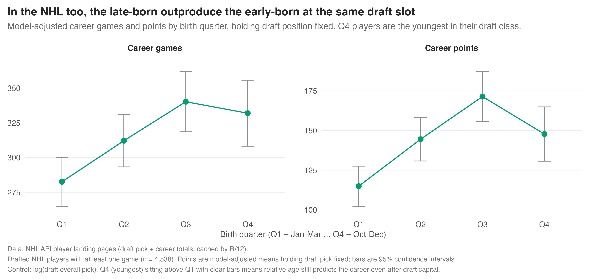
Extends the Underdog reversal above with a draft-capital control and error bars.
Michael: the Florida NBER paper looks at kindergarten, elementary, high school, and after. I want one visual anyone can read that shows the effect waning over time but still there. (Follow-up: the first version was confusing to read.)
Rebuilt after his note: the old version mixed units on one axis, had range bands that looked like error bars, and a busy arrow. This one is a single clean line, each point labeled in plain words. The oldest-in-class edge runs from a 10-point head start on being ready for kindergarten, through the test-score gaps in grades 4 and 8, down to a 1.3-point bump in the odds of starting college. It shrinks toward zero but never quite gets there, and the caption is honest that the stages use different measures, so read the shrink, not the exact steps.
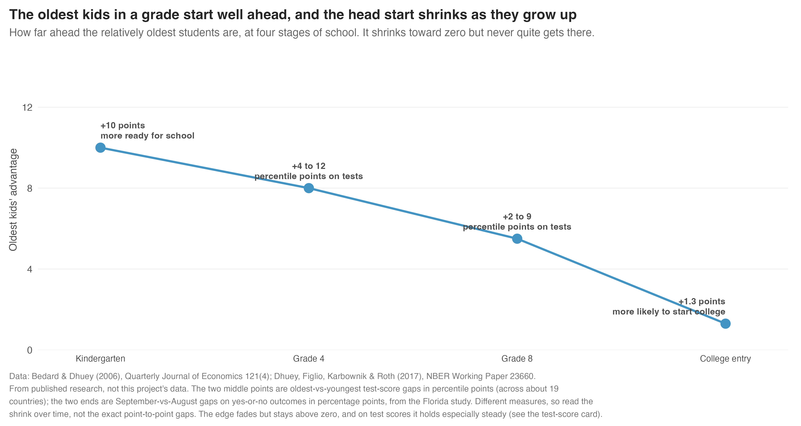
Michael flagged this exact paper (his follow-up): the NBER Florida study, for test scores and grades. It is already the source above, and here is its specific test-score result. The oldest kids in a grade score about 0.2 SD higher on tests, and it holds even between siblings in the same family, which means it is the age line itself, not family background. The paper calls the gap remarkably stable across grades 3 to 8.
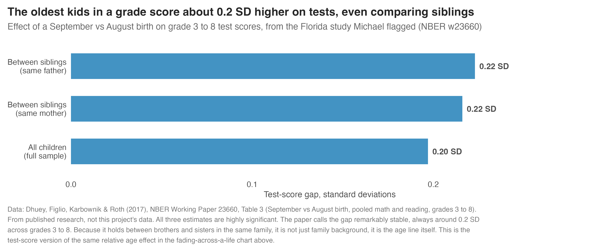
Feeds: Act Three. Built by R/38 and R/53.
Michael: income and earnings differences basically disappear by the mid-to-late 20s. Norway study, Norway follow-up, two American papers.
Found: mostly right, and gone a touch later than he guessed, by the early 30s. The twist is the direction. In the cleanest study, starting school older actually costs you early (about 9 percent lower earnings at 24), because you have less work experience at a given age, and that gap closes by 30. So the birthday barely touches adult pay, which is the honest counterweight to the CEO chart.
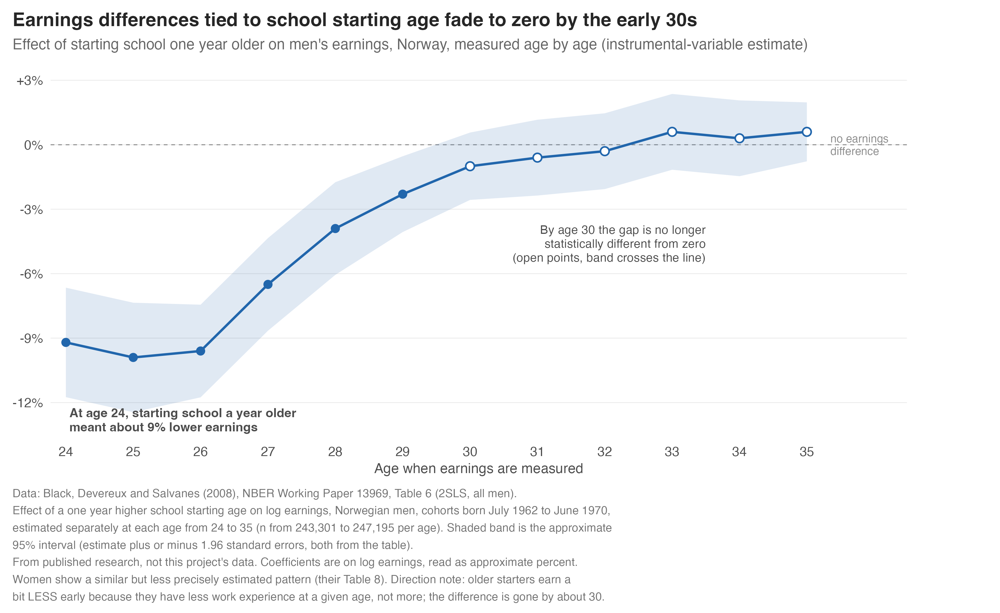
Pairs with: the fading-across-a-life visual. Built by R/39.
Michael: outline lists "Matthew Principal" under Birthday.
Found: the Matthew effect (Robert Merton, 1968) is accumulated advantage, a small early edge that keeps opening doors until it compounds into a big one. It is the spine of the piece, now named in the through-line. It also settles Michael's "the effect fades" point: raw ability differences do shrink as kids grow up, but the doors that opened or closed early stay that way, which is why the same birthday tilt reappears in the classroom and the corner office.
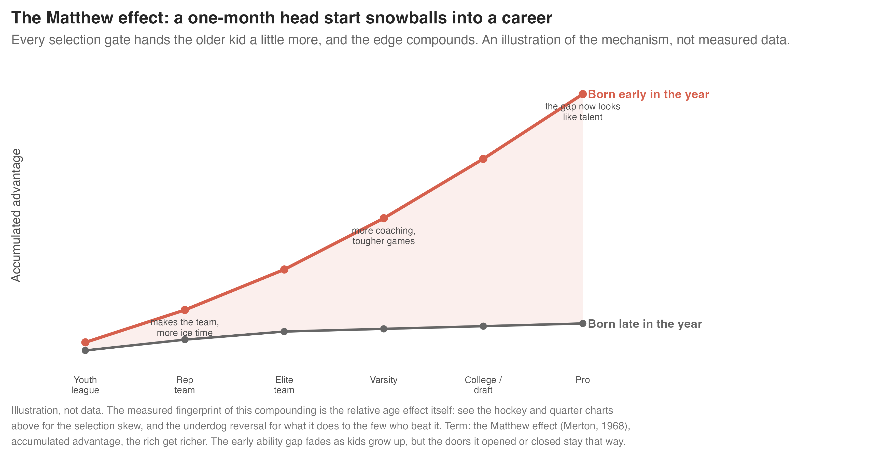
Ties together: the whole piece. Pairs with the Underdog reversal. Built by R/31.
Michael: only 187 CEOs, can we get more? Past CEOs are fine. (Asked again: did you add anything?)
Found, and pushed again when he asked twice: relaxing the birth-date rule from day to month precision moved it from 187 to 196 public-company CEOs, and adding large private employers (1000-plus staff) brings it to 224. The summer-below, August-above pattern holds but softens as the sample grows, with July drifting from 0.75 up to 0.86. The fully broad any-CEO pull (549) washes the effect out entirely. So the clean pool caps around 200 to 224, and the effect is small and sample-sensitive, which is exactly why we lean on the published S&P 500 studies for the large-sample version.
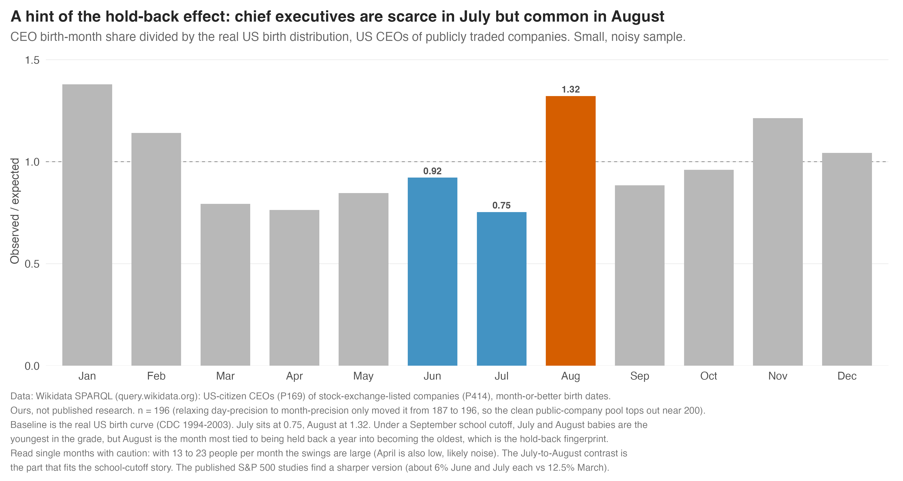
Feeds: Act Three CEO chart. Related: birth order, August hold-back. Built by R/41.
Michael: does the August pattern hold, or is it muddied because so many August babies get held back a year? Very common for August birthdays.
Found: a real fingerprint of his hunch, charted in the CEO card above. Real US births peak in August, yet chief executives dip in June and July (0.81 and 0.86 of expected) and spike in August (1.31). Under a September cutoff, July and August babies are the youngest in the grade, but August is the month most tied to being held back a year into being the oldest. That summer-low, August-high split is what the hold-back move would leave behind. Small, noisy sample that softens as it grows, so a lead, not a lock.
See the CEO chart above. Bridges Act Two (hold-backs) and Act Three (CEOs).
Michael: further question in the outline, has birth month shifted as parents get more deliberate about timing?
Found: no real change. Hockey's early-birth skew has held between 12 and 15 points (Q1 share minus Q4 share) in every decade since the 1990s, no shrink and no growth. Football, baseball, and basketball never had a skew and still do not. So the age-cutoff effect is stubborn, and if deliberate birth timing is happening, it is not showing up as a trend here.
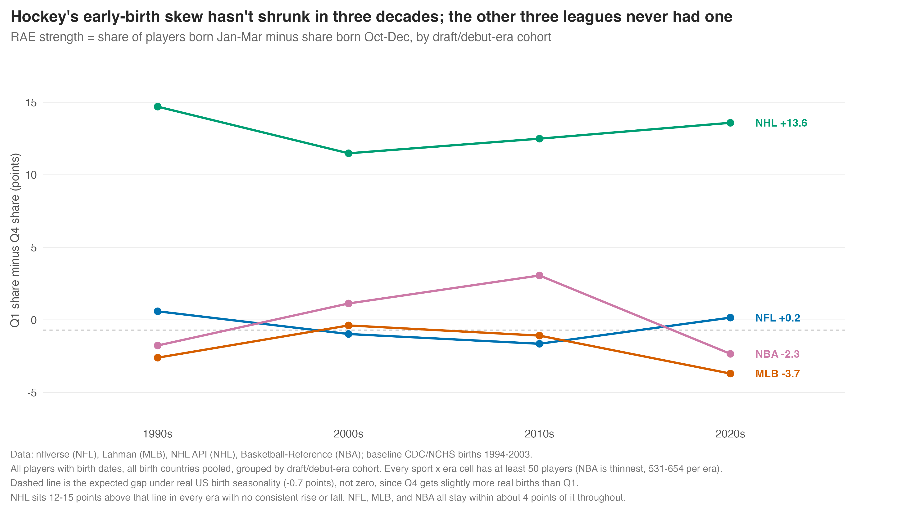
Extends: Act One. Built by R/34.
Michael: did you ever do soccer, Premier League or La Liga? And USA men versus women? I have heard the US is bad in La Liga.
Found: pulled both, and together they are the cleanest proof of the whole idea. The Premier League (13,543 players) and La Liga (8,008) both show the same birthday edge as US hockey, but each peaks at its own country's cutoff. England's youth cutoff is September 1, so English players pile up in September and October. Spain's is January 1, so Spanish players pile up in January. Same effect, the peak just slides to wherever the age line is drawn. It is about the cutoff, not the calendar. US men and women soccer is already split by sex in Act One, both leaning early-year. The separate "US struggles in La Liga" point is about quality abroad, a different question birthdays cannot answer.
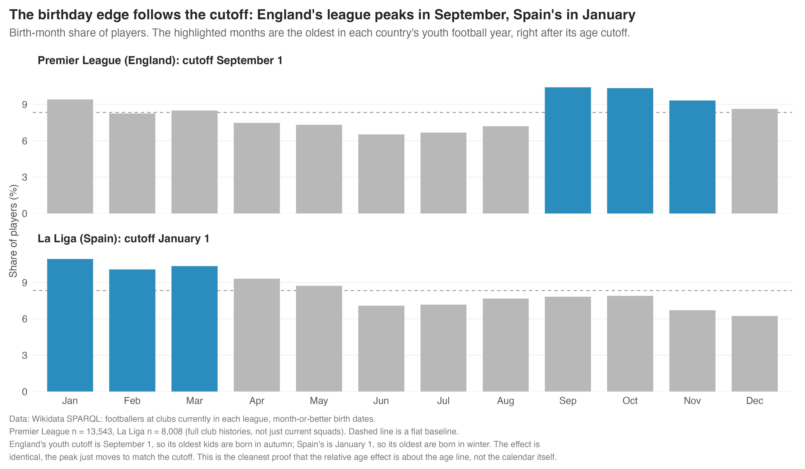
Extends: the soccer chart in Act One. Both foreign leagues now done.
2 Birth Place, the where
Most of this already lives on the main site. Michael wants it pushed further, and controlled so it is "fair."
Michael: what share of the NFL comes from the South, West, Midwest, Northeast? Control by population so it is fair.
Found: per million residents, the South makes 60 NFL players, the Midwest 39, the West 34, the Northeast 23. Put another way, the South is 54 percent of all players on 39 percent of the population, about 1.4 times its fair share, while the Northeast is 9 percent of players on 17 percent of people, about half.
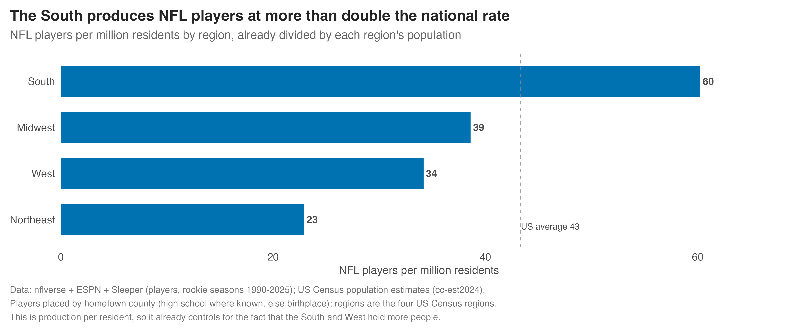
Uses: main-site map. Built by R/28.
Michael: which states produce the most NFL players per capita, and the least?
Found: Louisiana runs away with it at 135 players per million, about 3.1 times the national state rate, with Mississippi, Alabama, and Georgia close behind. The Deep South owns the top. At the bottom sit Vermont, Maine, and New Hampshire, all under 5 per million. Hawaii cracks the top with 60, the Polynesian football pipeline showing up.
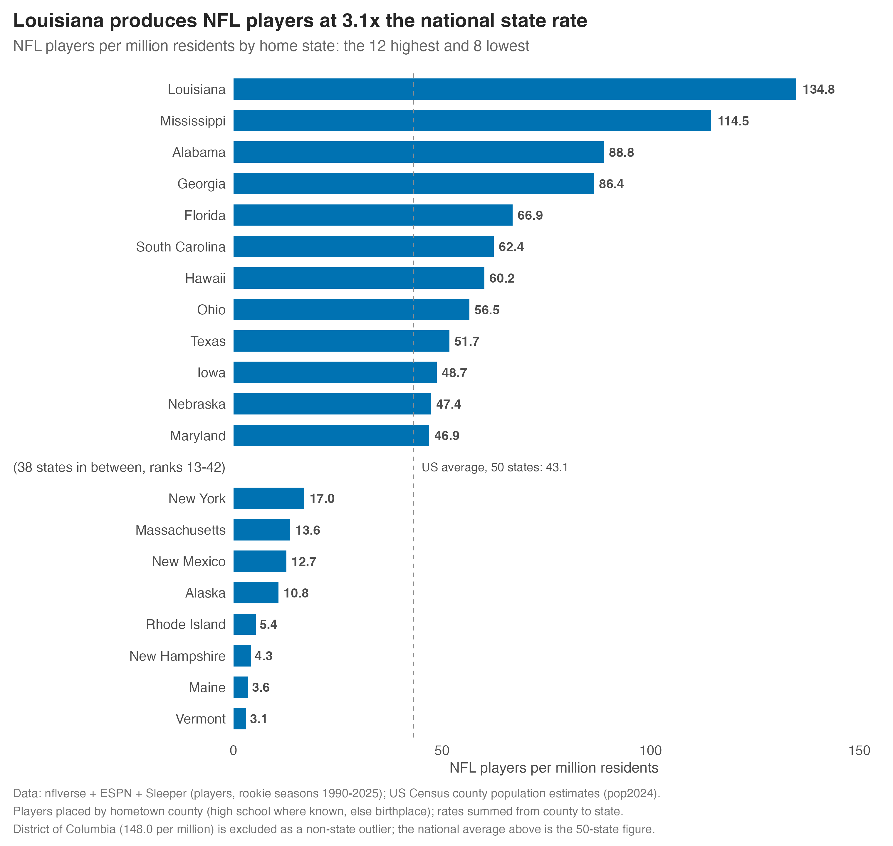
Lives near: the main-site geography. Built by R/35.
Michael: need a bit more on the "where" for the different sports, not just the NFL map.
Found: each sport has its own map. Baseball leans on Pennsylvania and the Midwest, basketball on Mississippi and the Deep South, hockey almost entirely on Minnesota (55 per million, well clear of the field). The geographies barely overlap, which is the point: every sport grows in different soil. Birthplace-based and US-born, so read it against the NFL hometown map, not as identical.
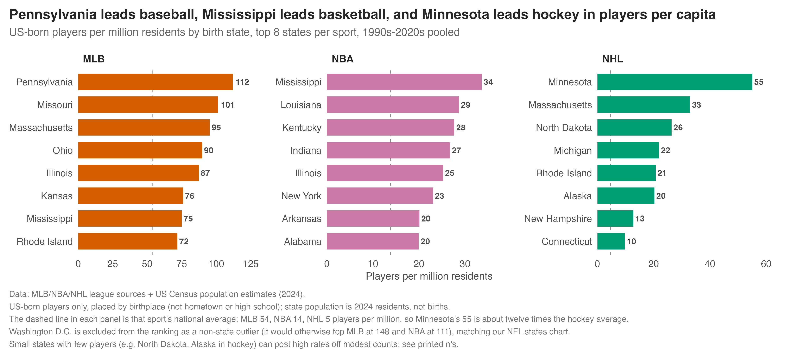
The least (he asked too): baseball's lowest per capita are the Mountain West (Utah, Idaho, Nevada, all near 15 per million); basketball's are the small northern states (Vermont produces essentially none); and hockey's bottom is a wall of zeros across the warm-weather South, where Arkansas, Kentucky, and others produce no NHL players at all.
Also on the main site: the full county-level per-capita map for each of these sports (MLB, NBA, NHL), a finer-grained companion to the state view here.
Extends: the main-site map. Built by R/36.
Michael: can we look at where positions come from? QB for example.
Found: QBs do come from richer hometowns than most, but they are not the richest. Median hometown income runs highest for kickers and punters (75k), then tight ends (74k), then quarterbacks (74k), all the finesse and specialist spots. The line and defensive positions come from less money, with defensive linemen lowest at 64k. So the "rich quarterback" story is really a "rich skill and special-teams player" story, and I had the ranking wrong before.
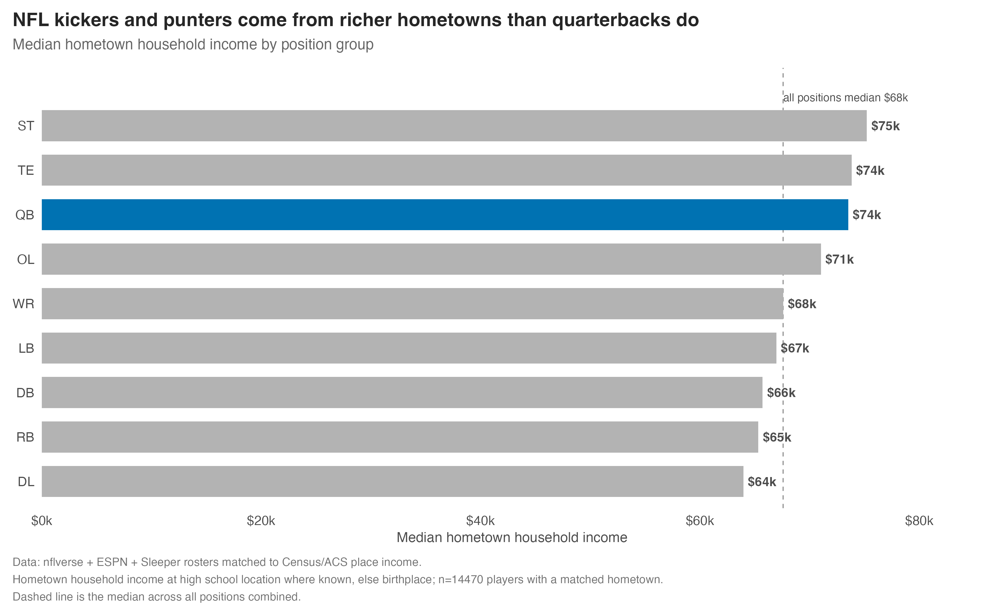
The main site agrees: its kicker chart found the same thing over four eras. Kickers and punters come from richest-quartile hometowns at 43 percent in the 2020s, ahead of quarterbacks at 39 percent, and that gap is statistically solid (p = 0.0003).
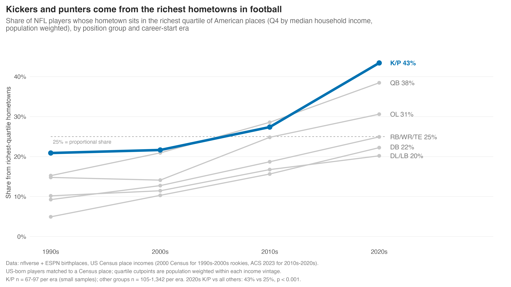
Corrects an earlier claim that QBs were the richest. Built by R/37; kicker chart from the main site.
Michael: we saw the zip-code money shift. Is that regional too? Are Mississippi and Alabama producing fewer NFL players now that the sport is expensive?
Found: no, not at the regional level, and this one surprised me. The South's share of NFL players rose across the eras, from 52 to 57 percent, so the region is producing more, not less. But the money shift is real inside the South: the median hometown income of Southern players climbed from 58k to 68k. So the rich-getting-richer is a move toward richer neighborhoods within the same productive states, not the South being squeezed out.
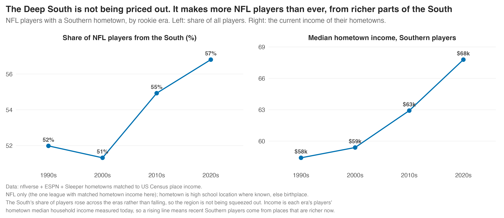
Answers Michael's regional version of the income shift. Built by R/44.
Michael: QBs keep rising from the richest quartile of hometowns. Is that partly a high-school-location thing? Bryce Young is the example.
Found: both halves are true. The share of QBs from the richest quarter of hometowns rose from 24 percent to 42 percent over the eras, so the trend is real. And part of it is the high school: QBs we place by high school come from hometowns about 7k richer than QBs we place by birthplace (78k vs 71k), so a recruit who moves to a well-off powerhouse, like Bryce Young at Mater Dei, gets tagged to that richer place. But even by birthplace alone, QBs still skew rich, so it is not only a school-location artifact.
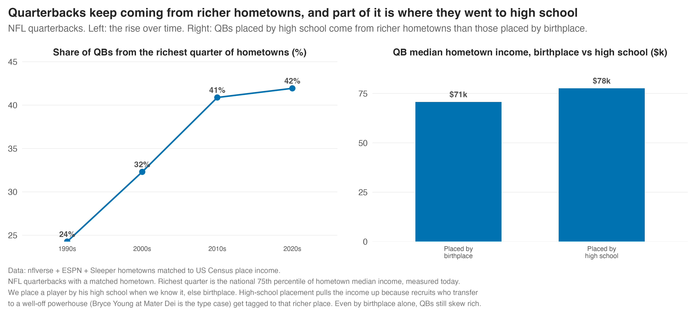
Related: the positions and income cards.
Michael: outline notes urban share is shrinking and the rich are getting richer, then transition that into "family."
From the main site: he is right that the urban share is shrinking. The densest hometowns produced a big slice of players in the 1990s and have collapsed since, with production sliding into mid-density suburban places. Paired with the income ladder, that is the "where" handing off to "family."
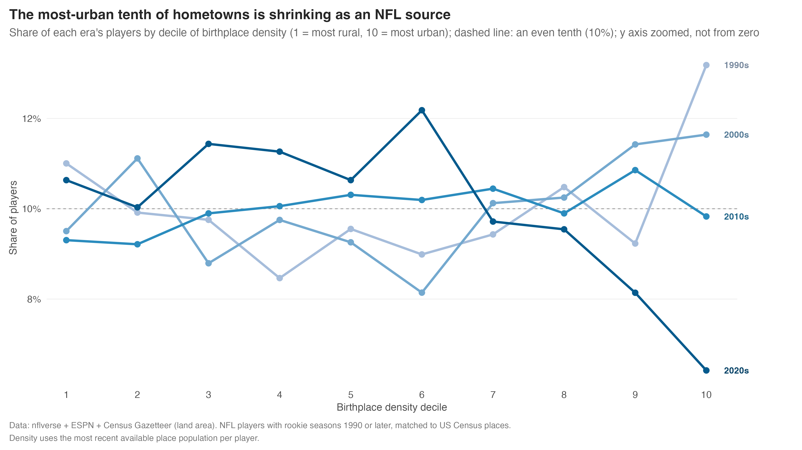
Hands off to: Birth Family. From the main-site density work.
3 Birth Family, the who-you-were-born-to
Who you were born to. Income, legacy, and the head start a family can buy.
Michael: income, via zip code, which is kind of a "where."
From the main site: this is the spine of the whole project. The share of NFL players from the richest quarter of hometowns climbed from about 10 percent to 25 percent across the eras, while the poorest quarter fell from 43 to 33. The money edge is real and growing, and it is the same edge that pays for Kid A vs Kid B above.
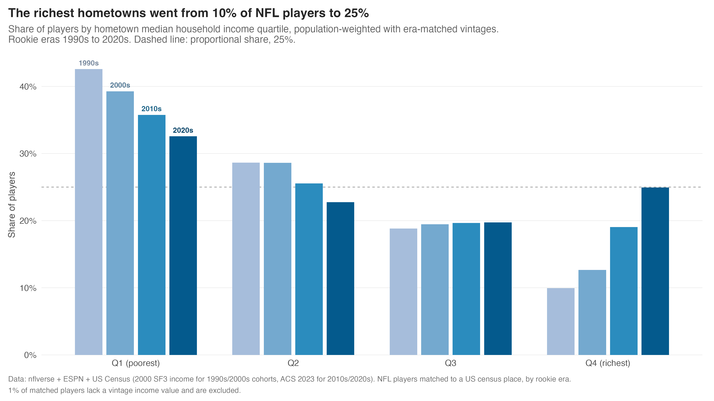
Same thread as: cities and zip codes. Feeds: Kid A vs Kid B.
Michael: outline lists "College Alumni Child" under family.
Where it landed: no public dataset ties a pro athlete to whether a parent went to college, or to which one. The only thing we can measure is father-son pro pairs, which is a narrow and biased proxy for "legacy," not the family-education question he is after. So we are parking this one honestly rather than forcing a weak number. It stays a narrative point, carried by the income work, not its own chart.
Part of: the family-resources argument.
Michael: Kid A vs Kid B, the first three major expenses of adult life, help with college, help with a house, help with a wedding.
Found: built it as a clean explainer. The same three bills, college, a first home, and a wedding, hit both kids, but Kid A's family absorbs them and Kid A starts the 30s with savings and equity, while Kid B funds them alone and starts behind. It is the income thread made human. Clearly labeled an illustration, not measured data.
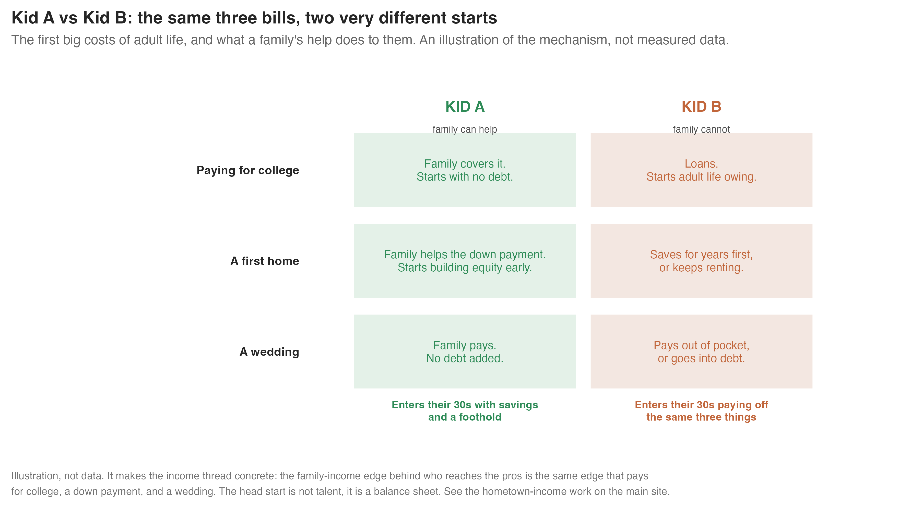
Now with Michael's numbers: he put dollars on it. College help $50k, a down payment $100k, a wedding $25k, a $175k head start. Invested at 8 percent from age 20, that head start becomes $5.6 million by 65, about $2 million in today's dollars. Person B, paying their own way, starts at zero or in debt. The gap is not talent or effort, it is compounding.
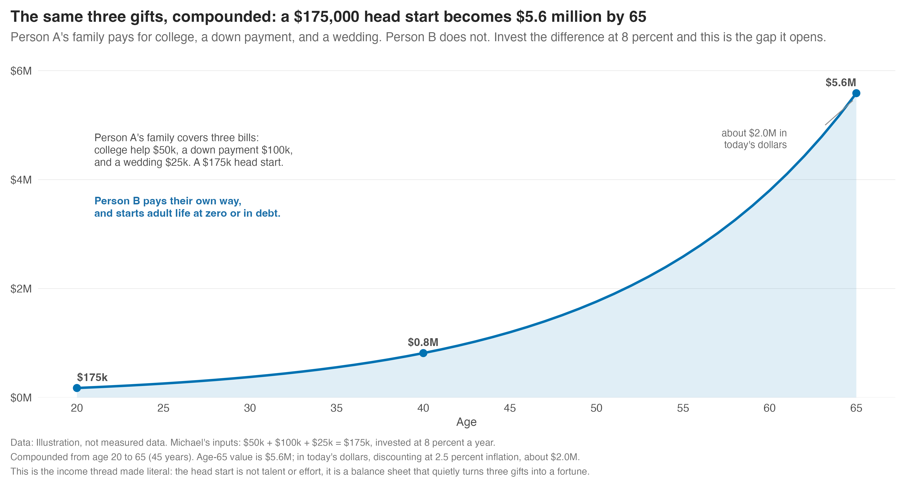
Illustrates: income as the engine. Pairs with the wealth gradient in Beyond sports. Built by R/43 and R/49.
4 Birth Order, the sibling question
Michael asked about this twice, for both athletes and CEOs. Least developed, worth a scoping pass.
Michael: have you looked at birth order for anything? And separately, are CEOs first-borns? Some are only children, so they would be overweighted either way.
Found: the first-born advantage is real but small. Two large Norwegian studies put first-borns about 2 to 3 IQ points ahead of second-borns, and the same edge shows up as roughly 2 percent higher adult earnings. On his specific "are CEOs first-borns" question, we could not find a rigorous, large-sample source, so we left that claim out rather than repeat a popular but unverified stat.
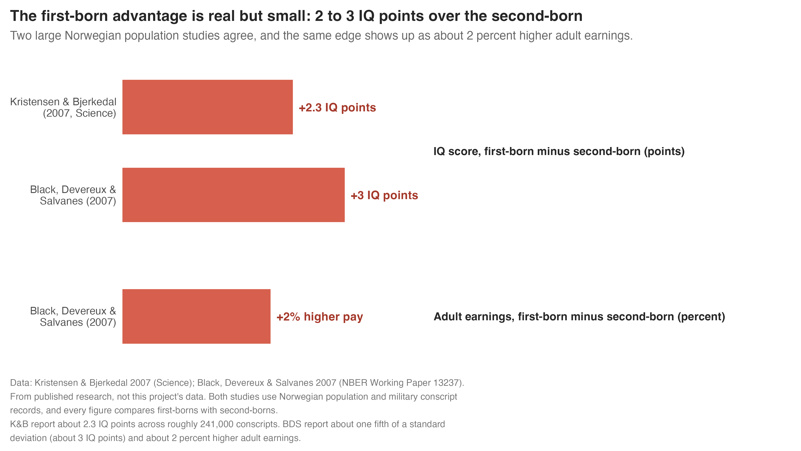
Beyond IQ, and besides 2007 (his follow-ups): the 2 percent earnings gap above is the main non-IQ result we could verify. A larger 2015 study across the US, UK, and Germany (Rohrer and colleagues, more than 20,000 people) confirmed the small first-born IQ edge but found no birth-order effect on personality, which quietly kills the "first-borns are more responsible" stereotype. On sports the research flips, later-borns tend to be the risk-takers (the classic example is younger brothers attempting far more stolen bases). We are not running our own birth-order study; this is a careful read of what is out there.
Connects: CEO sample (Birthday) and the family cards. Built by R/40.
Further questions
Loose threads from the end of Michael's outline. Parked, not dropped.
Michael: do we add "Politics"?
From the main site: the finding already exists. In all four leagues, blue-leaning counties produce the most players per capita and red-leaning ones the fewest. The gradient is mildest for the NFL and steepest for hockey. It describes places, not players' politics. Worth folding in if it fits the "Birth" spine, though it risks sprawl.
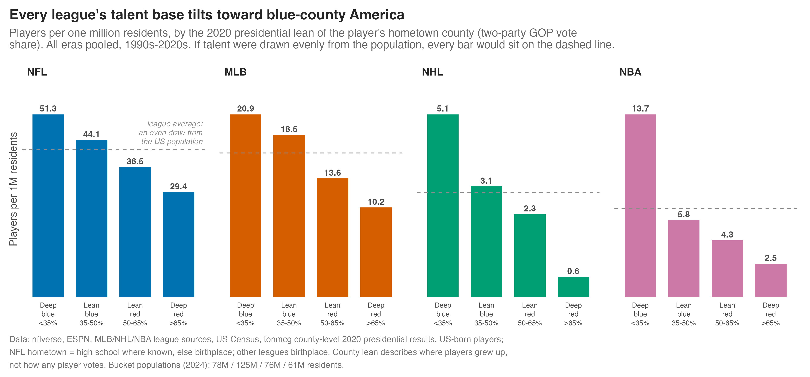
Exists on: the main site.
Beyond sports, the final piece
Michael's last idea: point the whole where-and-when-you-are-born thesis at general life outcomes, nothing to do with sports. By region, by zip, by wealth.
Michael: expand the sections for more general purposes than sports. Look at zip codes, or wealth, or regionally, at things like income, education, home ownership. This part has nothing to do with sports.
Found: the direction works, and the Census makes it easy. Straight from ACS 2023: the Northeast and West lead on income (88k and 90k) and the Northeast on college degrees (40 percent), while the South trails on both (73k, 33 percent). Home ownership flips, highest in the Midwest (69 percent), lowest in the West (61 percent). The same geography that sorts athletes sorts everyday life, long before any sport.
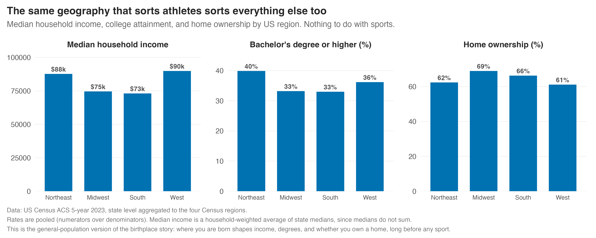
The general-population extension. Michael calls it the final piece.
Michael: maybe look at it by wealth? By zip code?
Found: sort every US county into equal-population income fifths, from the poorest 20 percent of places to the richest, and the outcomes climb almost in lockstep. College degrees double from 24 to 48 percent, employment rises from 53 to 64 percent, marriage from 46 to 53 percent, and life expectancy climbs 6.9 years, from 74 in the poorest fifth to 81 in the richest. The one thing that does not follow wealth is home ownership, flat near two-thirds everywhere, because expensive places have more renters.
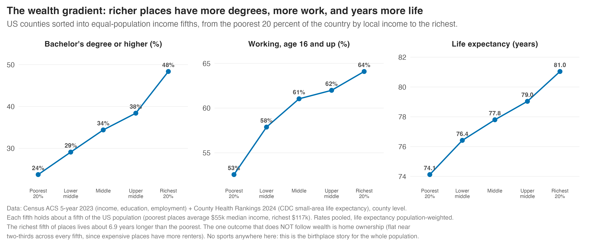
The "by wealth" cut Michael asked for. Zip-level is the same pull at finer grain.
Michael: not just regionally, but over time by the same income quartiles. Is a kid in the bottom fifth further from the median than in the 90s? College degrees and home ownership by quartile too. We are getting at the widening Matthew principle.
Found, and it went against the hunch: the gap between rich and poor places is wide, but mostly not widening. Binning counties into income fifths back to 2000, the income ratio between the richest and poorest fifth held near 2.1 times for 23 years, and the real-dollar gap grew only about 11 percent. The college-degree gap grew about 5 points in raw terms, but its ratio narrowed as poorer places gained faster. Home ownership has no gap by place income and closed to zero. So at the place level, on these measures, the widening Matthew principle mostly does not show up.
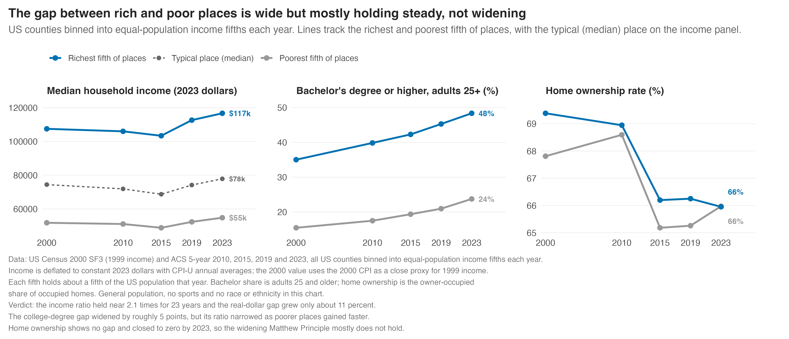
The honest caveat, and where the widening really lives: this is PLACE-level inequality, rich counties vs poor counties. It is not the same as household or top-1-percent inequality, which genuinely has widened over this period. A county's median hides the rich tail pulling away inside it, so the real Matthew-principle story is at the household and 1 percent level, which Michael flagged. That is a different data source (the Fed and IRS, national) and the honest place to chase the widening gap.
Michael's over-time, by-quartile ask. Answered honestly: place-level gaps hold steady; the widening is a household and 1-percent story. Built by R/56.
Michael: do the top 1 percent study too. And what about the 90s?
Found, and here his instinct is dead right: at the household level the gap has widened enormously, and the data runs back to 1989, so it covers the 90s the county data could not. The top 1 percent's share of all US wealth rose from 22.8 percent in 1989 to 31.6 percent now, nearly a third, while the bottom half fell from 3.5 to 2.5 percent. The richest 1 percent went from holding about six and a half times the bottom half's wealth to nearly thirteen times. This is the real Matthew principle, and it is exactly what the place-level chart above could not see, because a county's median hides the rich pulling away inside it.
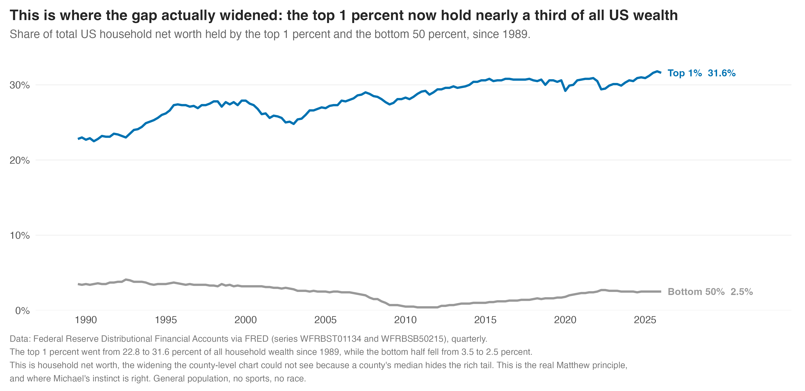
Answers "the top 1 percent" and "what about the 90s" (data starts 1989). The widening lives here, at the household level. Built by R/57.
Michael: I would imagine a significant difference in test scores based on family income or net worth.
Found, and he is right: SAT scores climb at every step up in family income. Kids from families under 20k averaged 1326 out of 2400; kids from families over 200k averaged 1714, a gap of almost 400 points, and it rises at every income band in between with no exceptions. This is the plain link from family money to a child's test scores.
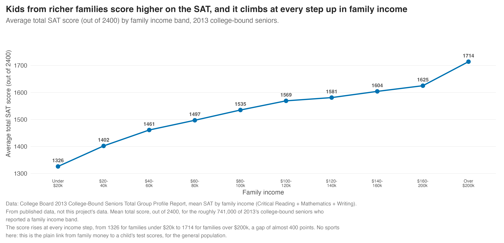
Michael's first email example, answered. Built by R/58.
Michael: I would imagine a significant difference in future child income based on family income or net worth.
Found, and it is stark: a child born into the richest fifth of families has a 36.5 percent chance of reaching the top income fifth as an adult; a child from the poorest fifth has just 7.5 percent, almost five times lower. If family did not matter, every group would sit at 20 percent. Family income bends the outcome hard, from Raj Chetty's tax-record study of nearly 10 million children. This is the Matthew principle at the level of a single life.
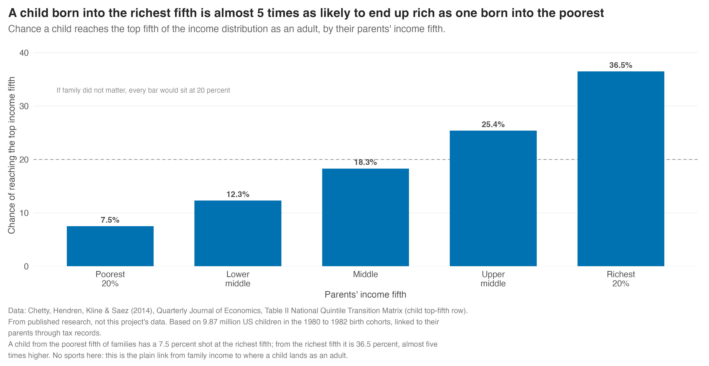
Michael's second email example, answered. Built by R/58.
Michael: family wealth, net worth, adjusted for inflation.
Found, with a caveat: true household net worth does not exist at the county or zip level, since the Fed's wealth survey is national only. But the biggest slice of most families' wealth is home equity, and home value we can map. Median home value runs from 170k in the poorest fifth of places to 603k in the richest, a 3.5 times gap, the same steep climb as the rest of the outcomes. It is a proxy, labeled as one, not true net worth.
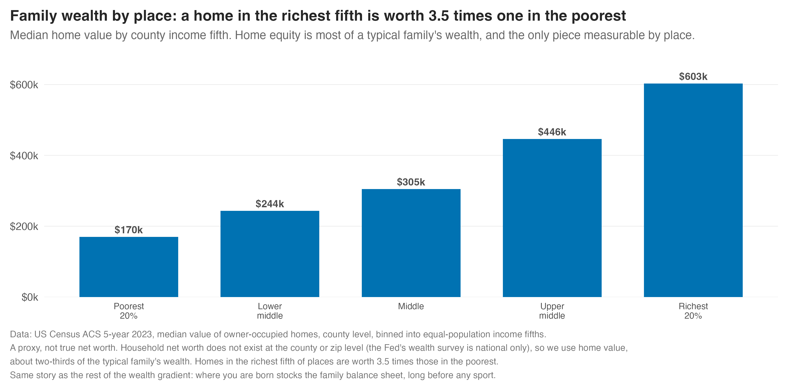
Answers the "family wealth" item as far as small-area data allows.
Michael's list: median income, family wealth, education by degree level, employment rate, home ownership, marriage rate, life expectancy, sliced by region or zip or wealth, adjusted for inflation where it helps.
What is done: income, education, employment, home ownership, marriage, and life expectancy are all built now (ACS plus County Health Rankings). Family net worth, the one with no true small-area data, is now proxied by home value in the card above, which is most of a typical family's wealth. So his whole list is covered, each item either measured directly or proxied honestly. A zip-level cut of any of these is the same pull at finer grain.
His outcome list is now fully covered. A zip-level cut is the natural next grain.